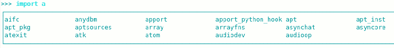
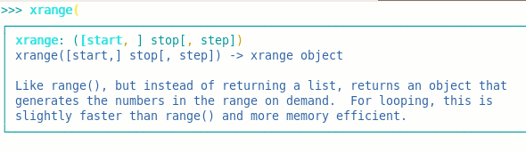

bpython
Dieser Artikel wurde für die folgenden Ubuntu-Versionen getestet:
Ubuntu 14.04 Trusty Tahr
Zum Verständnis dieses Artikels sind folgende Seiten hilfreich:
bpython  ist eine Erweiterung des "normalen" interaktiven Python-Interpreters, wie man ihn beim Aufruf von python erhält. Diese Erweiterung soll dem Benutzer all die nützlichen Extras geben, die man von einer modernen IDE her kennt, aber in einem simplen und einfachen Programm in einem Terminalfenster.
ist eine Erweiterung des "normalen" interaktiven Python-Interpreters, wie man ihn beim Aufruf von python erhält. Diese Erweiterung soll dem Benutzer all die nützlichen Extras geben, die man von einer modernen IDE her kennt, aber in einem simplen und einfachen Programm in einem Terminalfenster.
bpython erweitert den Interpreter um:
Syntax-Hervorhebung
Auto-Vervollständigung
Anzeigen der Parameterliste und Dokumentation für jede Funktion.
Rückgängig-Funktion
Möglichkeit, Sitzungen zu speichern oder im Pastebin von Pocco
zu hinterlegenautomatisches Einrücken
Es handelt sich also um eine komfortable, einsteigerfreundliche Variante des Interpreters.
Installation¶
bpython3 (für Python 3) bzw bp<yhon (für Python 2) befindet sich in den Paketquellen. Es muss lediglich
bpython3 (universe)
 mit apturl
mit apturl
Paketliste zum Kopieren:
sudo apt-get install bpython3
sudo aptitude install bpython3
bzw.
bpython (universe)
mit apturl
Paketliste zum Kopieren:
sudo apt-get install bpython
sudo aptitude install bpython
installiert werden, dabei wird das Paket python-pygments als Abhängigkeit mit installiert.
Zusätzlich gibt es für bpython eine - wenig hilfreiche - Version mit graphischer Oberfläche (GUI):
bpython-gtk (universe)
mit apturl
Paketliste zum Kopieren:
sudo apt-get install bpython-gtk
sudo aptitude install bpython-gtk
Benutzung¶
Man startet bpython3 über den Befehl [3]:
bpython3
bzw. bpython über den Befehl
bpython
Danach landet man direkt im interaktiven Interpreter, der - im Gegensatz zum Standardinterpreter - farbig ist. Hier kann man wie üblich Befehle eingeben, Funktionen definieren etc.

Fängt man an zu tippen, so schlägt bpython direkt, basierend auf den eingegeben Buchstaben, Module / Funktionen / Befehle / ... vor, die entsprechend anfangen. Ruft man eine Funktion auf, die üblicherweise einen Parameter erwartet, so blendet bpython einen kurzen Hilfstext ein, sobald man die öffnende Klammer schreibt.
Hat man eine Zeile schon abgeschlossen, sieht aber, dass man sich vertippt hat, so kann man die Eingabe über Strg + R rückgängig machen. Per Voreinstellung speichert bpython 100 Zeilen.

Wie von der Konsole und dem Python-Interpreter bekannt kann man die letzten Befehle mit ↑ wiederholen.
Weiterhin gibt es die Möglichkeit, die komplette Sitzung zu speichern. Dies umfasst nicht nur die eingegebenen Programmzeilen, sondern auch die Ausgaben inkl. Fehlermeldungen. Dazu drückt man einfach
Strg +
S und gibt einen Dateinamen ein. Ein Druck auf
F8 lädt die Sitzung nach http://paste.pocoo.org hoch. Beendet man bpython (z.B. mit
Strg +
D wird die gesamte Sitzung auch nochmals auf stdout, also in der Regel den Bildschirm, ausgegeben.
Konfiguration¶
Wer mit der voreingestellten Konfiguration nicht zufrieden ist, kann so gut wie alles anpassen, wie z.B. die Tastenkombination, das Farbschema etc. Dazu muss man im Homeverzeichnis die Datei ~/.bpython/config anlegen. Diese enthält dann die Konfigurations-Direktiven. Am einfachsten ist, wenn man das unter Installation genannte Quellpaket herunter lädt und von dort die Beispiel-Konfiguration verwendet.
Eine ausführliche Erklärung über die Parameter findet man in der Projektdokumentation .
- Erstellt mit Inyoka
-
 2004 – 2017 ubuntuusers.de • Einige Rechte vorbehalten
2004 – 2017 ubuntuusers.de • Einige Rechte vorbehalten
Lizenz • Kontakt • Datenschutz • Impressum • Serverstatus -
Serverhousing gespendet von